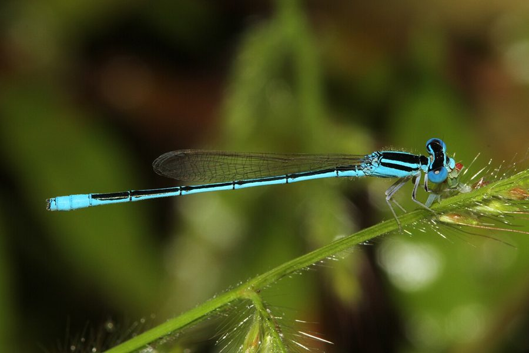

लिटिल ब्लू डार्टलेट व्याध पतंगLittle Blue Dartlet
Amphiallagma parvum · Coenagrionidae · INS-0205

- Scientific name वैज्ञानिक नाम
- Amphiallagma parvum (Selys, 1876)
- Family कुल
- Coenagrionidae
- Hindi हिंदी
- लिटिल ब्लू डार्टलेट व्याध पतंग
- Local names स्थानीय नाम
- little blue dartlet, little blue dartlet damselfly, chhoti neeli vyadh patang, dartlet
- Status here यहाँ की स्थिति
- native
- Movement आवागमन
- Resident, here all year
- Known from कहाँ दर्ज
- Others have published records from the wider Awadh–Purvanchal plain, none yet from Basti–Ayodhya अवध–पूर्वांचल से दूसरों के प्रकाशित अभिलेख, बस्ती–अयोध्या से अभी नहीं
- IUCN IUCN
- not evaluated
- Review समीक्षा
- not yet reviewed
When to look कब देखें
Present all year. साल भर मौजूद।
Uses and possibilities उपयोग और संभावनाएँ
Drawn from the documented uses in the profile below, where each is labelled traditional, current or a research lead. All uses →
Tell it apart from इनसे अलग पहचानें
लिटिल ब्लू डार्टलेट व्याध पतंग / Little Blue Dartlet
Amphiallagma parvum (Selys, 1876) — Coenagrionidae
लिटिल ब्लू डार्टलेट व्याध पतंग — उथले जलाशयों, पानी भरी नालियों और धान के खेतों के पास पाई जाने वाली एक अत्यंत छोटी, नाजुक और नीले रंग की डैमसेल्फ़्लाई है। इसके नर का सीना और पूँछ का अंतिम भाग चमकीले आसमानी नीले रंग का होता है जिस पर काली धारियाँ होती हैं। यह पानी के पास की घासों के बीच बहुत धीरे उड़ती है और मच्छरों तथा धान के छोटे कीटों को खाती है।
Quick Identification त्वरित पहचान
| Feature | Description |
|---|---|
| Size | Minute, very slender damselfly; abdomen 17–19 mm, hindwing 10–12 mm (Subramanian 2005) |
| Male Ground | Bright sky-blue or azure-blue marked with bronze-black lines (Fraser 1933) |
| Thorax | Black dorsally with broad, complete sky-blue antehumeral stripes (Subramanian 2005) |
| Abdomen Tip | Segments 8 and 9 entirely bright azure-blue, without dark dorsal marks (Fraser 1933) |
| Postocular Spots | Large, rounded sky-blue spots linked by a fine blue occipital stripe (Fraser 1933) |
| Female Colour | Pale greenish-yellow or olivaceous-brown with continuous bronze-black stripe (Subramanian 2005) |
| Flight Habit | Weak, fluttering flight low within emergent grassy vegetation |
Field tip: Look along grassy borders of shallow ponds, flooded ditches, and irrigation channels. A tiny, thread-like damselfly whose male is bright sky-blue with a black-and-blue striped thorax and entirely blue terminal abdominal segments 8 and 9, fluttering within centimetres of the water, is the Little Blue Dartlet.
हिंदी: पानी की घासों में बहुत नीचे उड़ने वाली इस नन्ही नीली पतंग के सीने पर नीली-काली धारियाँ और पूँछ के अंतिम दो खंड पूरी तरह चमकीले नीले होते हैं।
Morphology आकारिकी
Measurements as given in the handbooks (Subramanian 2005; Fraser 1933):
| Measurement | Range | Source |
|---|---|---|
| Abdomen length | 17–19 mm | Subramanian (2005) |
| Hindwing length | 10–12 mm | Subramanian (2005) |
Adult description:
Amphiallagma parvum is a miniature coenagrionid damselfly displaying delicate proportions and crisp blue-and-black coloration (Fraser 1933). The head has a velvety black vertex bearing large, rounded, bright azure-blue postocular spots connected across the occiput by a fine blue transverse line (Subramanian 2005). The frons, clypeus, and labrum are pale azure-blue; the compound eyes are deep blue above and pale greenish-yellow below (Fraser 1933).
The synthorax is velvety black on the dorsum, adorned with broad, complete, bright sky-blue antehumeral stripes; the lateral pleura are pale azure-blue fading to whitish beneath (Subramanian 2005). The abdomen is exceptionally slender and cylindrical: segment 1 is blue with a small black basal spot; segment 2 is blue with a distinctive black thistle-shaped or goblet-shaped dorsal mark; segments 3 through 7 are bronze-black above with narrow blue basal rings; segments 8 and 9 are entirely bright azure-blue; and segment 10 is black dorsally and blue laterally (Fraser 1933).
Females are dimorphic and slightly stouter than males (Fraser 1933). The common heteromorphic female has an olivaceous-green or pale brown thorax with dark stripes, and an abdomen that is dull greenish-yellow overlaid by a broad, continuous bronze-black dorsal band extending from segment 1 to 10 (Subramanian 2005). In both sexes, the wings are narrow, petiolate, and completely transparent, with small, pale brownish-black pterostigmata (Fraser 1933).
Larval Stage निम्फ अवस्था
The aquatic naiad is tiny, slender, and translucent green or pale greyish-brown, clinging tightly to submerged stems of Hydrilla verticillata (Hydrilla). The caudal gills are elongate, oblanceolate, rounded apically, and marked with faint brown spots along the tracheal branches.
हिंदी: नर का पेट 17 से 19 मिमी लंबा होता है। इसका सीना नीला-काला और पूँछ का अंतिम भाग चमकीला नीला होता है। मादा हल्के हरे-भूरे रंग की होती है। इसका निम्फ पारदर्शी हरा होता है।
Behaviour & Ecology व्यवहार और पारिस्थितिकी
The Little Blue Dartlet is a sun-loving, low-flying inhabitant of calm, shallow lentic freshwaters (Subramanian 2005). It thrives in agricultural landscapes, frequenting weed-filled field drains, waterlogged borrow pits, village tanks, and grassy edges of rice fields (Fraser 1933). Its flight is low, cautious, and fluttering, rarely ascending more than ten to twenty centimetres above surrounding grass blades.
Males perch prominently on horizontal grass blades or sedge culms, defending tiny mating territories spanning less than half a metre of shoreline (Subramanian 2005). They regularly flick their wings when neighbouring males approach. Copulation occurs in the tandem wheel position perched among dense grasses. Oviposition is performed in tandem or by the female unaccompanied, inserting eggs into submerged grassy vegetation.
हिंदी: यह नन्ही डैमसेल्फ़्लाई धूप में सक्रिय रहती है और घासों के ऊपर बहुत नीचे उड़ती है। नर घास की पत्तियों पर बैठकर अपने छोटे से क्षेत्र की रखवाली करता है।
Life Cycle / Phenology जीवन चक्र
Seasonal phenology in northern Indian alluvial wetlands across the agricultural calendar (Fraser 1933; Subramanian 2005):
| Season / Month | Stage | Field Observation |
|---|---|---|
| July–September (Kharif monsoon) | Adult emergence & breeding | Explosive emergence in newly flooded fields and ditches (Subramanian 2005) |
| October–November (Post-monsoon) | Peak adult numbers | Abundant along receding wetland edges and grassy drains |
| December–January (Rabi winter) | Naiad development | Slow nymphal feeding in perennial channels and drainage pools |
| February–April (Spring / Zaid) | Adult emergence | Spring brood active around irrigated channels and village tanks (Fraser 1933) |
| May–June (Pre-monsoon summer) | Drought refuge | Persists in shaded moist microhabitats near tube-wells (Subramanian 2005) |
Females insert elongate eggs into the soft tissue of submerged aquatic grasses, sedges, and plants like Ipomoea aquatica (Water Spinach). The eggs hatch after a few days into tiny aquatic nymphs. Naiads develop rapidly through several instars over a few weeks, an adaptation to life in temporary monsoon pools that dry up within months. Multiple overlapping generations are produced throughout the active warm season.
हिंदी: मादा पानी में डूबी घासों में अंडे देती है जो कुछ दिनों में फूटते हैं। इसका निम्फ कुछ ही हफ्तों में तेजी से बड़ा होकर वयस्क बन जाता है।
Host Plants or Prey आहार
Amphiallagma parvum is an insectivorous predator throughout its aquatic and adult existence (Subramanian 2005):
Adult diet:
- Small disease-transmitting mosquitoes, such as Culex quinquefasciatus (Southern House Mosquito) and Anopheles culicifacies (Malaria Mosquito).
- Minute agricultural sap-sucking pests of rice, including Nilaparvata lugens (Brown Planthopper) and Nephotettix virescens (Green Leafhopper).
- Micro-dipterans, including midges (Chironomidae) and fruit flies along field margins.
Larval diet:
- Mosquito larvae and pupae, ostracods, copepods, and tiny aquatic oligochaetes in shallow water.
हिंदी: यह छोटी डैमसेल्फ़्लाई धान के फुदकों और मच्छरों को खाकर किसानों की मदद करती है। इसका जलीय निम्फ मच्छरों के लार्वा को नष्ट करता है।
Predators / Natural Enemies शत्रु
Natural predators documented preying upon Amphiallagma parvum in Gangetic plain agroecosystems:
- Spiders: Grass-dwelling orb-weavers and wolf spiders (Lycosa) stalk resting adults on paddy bunds.
- Predatory insects: Larger dragonflies like Crocothemis servilia (Scarlet Skimmer) and Orthetrum sabina (Slender Skimmer) ambush flying adults.
- Amphibians: Small juvenile frogs like Euphlyctis cyanophlyctis (Skittering Frog) catch adults perched low over water.
- Fish: Surface-feeding freshwater fish readily devour nymphs in shallow pools.
हिंदी: छोटी मकड़ियाँ, बड़े व्याध पतंग और मेंढक इस नन्ही डैमसेल्फ़्लाई को अपना शिकार बनाते हैं। मछलियाँ पानी में इसके निम्फ को खाती हैं।
Agricultural / Human Relevance कृषि प्रासंगिकता
Beneficial insect in paddy ecosystems: The Little Blue Dartlet is a valuable beneficial predator in rural rice paddies of northern India (Subramanian 2005). Because its population explodes during the monsoon kharif season, it feeds voraciously on nymphs and adults of the brown planthopper (Nilaparvata lugens Brown Planthopper) and the green leafhopper (Nephotettix virescens Green Leafhopper), helping suppress viral vector outbreaks without synthetic chemical insecticides.
Mosquito control: Both adults and aquatic naiads contribute to natural suppression of vector mosquitoes (Culex and Anopheles) in stagnant rural ditches.
Traditional: No traditional uses are known.
Today: Recognized by agricultural entomologists as a key beneficial bio-control agent in lowland rice farming.
Research direction (a lead, not a result): Assessing field predation efficiency on planthopper swarms under integrated pest management regimes.
हिंदी: धान के खेतों में यह एक अत्यंत लाभकारी कीट है। यह फसल को नुकसान पहुँचाने वाले कीटों और बीमारी फैलाने वाले मच्छरों का प्राकृतिक रूप से सफाया करता है।
Expected Locally स्थानीय रूप से अपेक्षित
Not a field record. Written from published accounts for eastern Uttar Pradesh. No confirmed local sighting yet — if you have seen it, that is what the atlas needs.
अभी तक स्थानीय पुष्टि नहीं। यह विवरण प्रकाशित स्रोतों से है, किसी अवलोकन से नहीं।
The Little Blue Dartlet is expected across eastern Uttar Pradesh in shallow flooded ditches, grassy margins of rice fields, and temporary roadside pools. Look carefully among low grass blades in full morning sunshine from July through November. GBIF holds published records from the wider Awadh–Purvanchal plain, none yet from Basti–Ayodhya. A photograph with date and location, submitted through the About page, would confirm the first local documentation for the district.
Distribution वितरण
Global range: Confined to South and Southeast Asia, occurring widely across India, Pakistan, Nepal, Bangladesh, and Myanmar (Fraser 1933).
In India: Found across the northwestern dry plains, Rajasthan, Punjab, the Gangetic floodplains, central India, and eastward to West Bengal and Assam (Prasad & Varshney 1995; Mitra 2002).
In Uttar Pradesh: Documented from irrigation canals, agricultural wetlands, and floodplains across western, central, and eastern districts.
In Basti district / eastern UP: Expected as a widespread resident breeding damselfly in rural paddy fields, borrow pits, and seasonal drainage depressions.
हिंदी: यह प्रजाति भारत और पड़ोसी देशों में पाई जाती है। उत्तर प्रदेश के मैदानी इलाकों में धान के खेतों और पानी भरी नालियों में यह आसानी से मिल सकती है।
Research Questions शोध प्रश्न
- How do seasonal pesticide applications on kharif paddy affect adult Amphiallagma parvum population density along field edges? / धान पर कीटनाशक छिड़काव का इस नन्ही डैमसेल्फ़्लाई पर क्या प्रभाव पड़ता है?
- What is the daily predation rate of Amphiallagma parvum on brown planthopper nymphs in eastern UP rice fields?
- How quickly do Amphiallagma parvum adults colonize newly excavated rainwater borrow pits after the onset of the monsoon? / बारिश के नए गड्ढों में यह कीट कितनी जल्दी पहुँचता है?
- What proportion of females in local populations exhibit the andromorphic versus heteromorphic colour phases?
- Can local farmers learn to recognize this colorful damselfly as a beneficial ally rather than a pest?
Similar Species मिलती-जुलती प्रजातियाँ
| Species | How to tell apart | हिंदी | |
|---|---|---|---|
| Pseudagrion spencei ([[spences_dartlet\ | Spence's Dartlet]]) | Noticeably larger; thorax has black humeral stripes; male superior appendages deeply bifid | स्पेंसेज डार्टलेट — बड़ी नीली डैमसेल्फ़्लाई |
| Ischnura senegalensis ([[senegal_golden_dartlet\ | Senegal Golden Dartlet]]) | Thorax bright green and black; only segment 8 is blue; segments 9 and 10 are black | सेनेगल गोल्डन डार्टलेट — हरी और नीली पूँछ वाली डार्ट |
| Ceriagrion coromandelianum ([[coromandel_marsh_dart\ | Coromandel Marsh Dart]]) | Much larger; entire body bright citron-yellow; entirely lacks blue and black colouration | कोरोमंडल मार्श डार्ट — पूरी तरह पीला शरीर |
Field rule: A miniature damselfly perching low in wetland grass whose male has a black-and-blue striped thorax, black abdomen with blue basal rings, and entirely bright azure-blue segments 8 and 9 is the Little Blue Dartlet.
हिंदी: स्पेंसेज डार्टलेट इससे बड़ी होती है और कोरोमंडल मार्श डार्ट पीली होती है, जबकि लिटिल ब्लू डार्टलेट अत्यंत छोटी होती है और इसकी पूँछ का सिरा नीला होता है।
Taxonomy & Classification वर्गीकरण
Original description. Described by Edmond de Selys-Longchamps in 1876 as Enallagma parvum in Bulletin de l'Académie royale des Sciences, des Lettres et des Beaux-Arts de Belgique, (2) 41, page 537. Type locality: "Inde" (India).
Subspecies. Monotypic — no subspecies are recognized across its South and Southeast Asian range.
Family and order placement. Order Odonata, suborder Zygoptera, family Coenagrionidae. Described originally in Enallagma Charpentier, 1840; modern odonatological consensus places it in the genus Amphiallagma Kennedy, 1920.
Phylogenetic notes. Amphiallagma parvum is separated from true Enallagma by the structure of the male genital ligula and unique venational characters at the base of the wings (Subramanian 2005).
IUCN status rationale. Not evaluated (NE) on the global IUCN Red List of Threatened Species. It is an abundant, secure, and resilient damselfly that thrives across modified agricultural wetlands.
हिंदी: इसका वैज्ञानिक नाम Amphiallagma parvum है (पहले इसे Enallagma parvum कहा जाता था)। यह Coenagrionidae परिवार की सदस्य है और प्रकृति में सुरक्षित है।
Photo Gallery फोटो गैलरी
No photos yet — add field photos to media/species/little_blue_dartlet/ and run node scripts/sync_photos.js.
Photos needed आवश्यक फोटो
- [ ] Adult male perched on grass blade showing sky-blue coloration (घास पर बैठा नीला नर)
- [ ] Adult female showing thoracic markings and dark abdominal band (मादा की शारीरिक बनावट)
- [ ] Tandem mating pair on rice foliage (धान की पत्ती पर प्रजनन करती जोड़ी)
- [ ] Aquatic nymph clinging to submerged weed stem (जलीय पौधे पर निम्फ)
References संदर्भ
- Selys-Longchamps, E. de (1876). Synopsis des Agrionines, 5me légion: Agrion (suite). Bulletin de l'Académie royale des Sciences, des Lettres et des Beaux-Arts de Belgique, (2) 41: 496–539 [p. 537].
- Fraser, F. C. (1933). The Fauna of British India, Including Ceylon and Burma. Odonata, Vol. 1. Taylor and Francis, London, pp. 376–378.
- Subramanian, K. A. (2005). Dragonflies and Damselflies of Peninsular India — A Field Guide. E-book of Project Lifescape, Centre for Ecological Sciences, Indian Institute of Science and Indian Academy of Sciences, Bangalore, p. 57.
- Prasad, M. & Varshney, R. K. (1995). A check-list of the Odonata of India including data on larval studies. Oriental Insects, 29(1): 385–428.
- Mitra, T. R. (2002). Geographical distribution of Odonata (Insecta) of Eastern India. Memoirs of the Zoological Survey of India, 19(1): 1–208.
- GBIF Occurrence Data — Amphiallagma parvum, India (2025).
Source file: species/fauna/insects/little_blue_dartlet.md